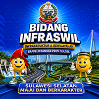

MYC 2025-2027
Real-time: Okt 2026
Progres Preservasi Jalan
Monitoring & Evaluasi Kinerja Ruas Jalan
Total Ruas
...
...
Rata-rata Realisasi
...
Ruas Kritis
...
Total Panjang
...
Pilih Paket Preservasi